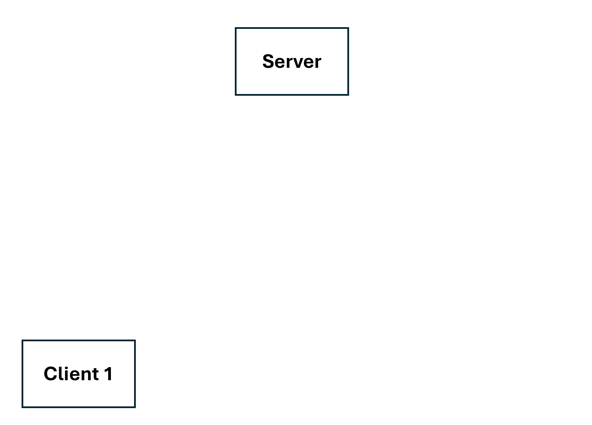

Remote Working Ground Server · Architecture
One shell service, two concurrency models
Projects 2 and 3 of the Network Programming course provide the same multi-user shell service
with two concurrency models: one process using select(), and one process per client. Users can
chat and send command output to each other through user pipes (cmd >N,
cmd <N).
Single process with select()
select() reports which client sockets have input. Since there is only one
process, there is only one stdin, stdout, stderr and environment. For each ready client, the
server loads that client's environment variables, dup2()s the client socket onto
fds 0–2, runs one command line, and then restores the original fds.
// np_single_proc.cpp:94-96, 106: save stdio once, then select() in a loop
dup2(STDIN_FILENO, 4);
dup2(STDOUT_FILENO, 5);
dup2(STDERR_FILENO, 6);
/* ... */
select(max_fd_history+1, &rset, NULL, NULL, (struct timeval *)0);// np_single_proc.cpp:202-219: handle one line for one client
if (FD_ISSET(client_fd_table[i], &rset)) {
clearenv();
for (auto env : User_Info_Map[i].EnvVar)
setenv(env.first.c_str(), env.second.c_str(), 1);
dup2Client(client_fd_table[i]); // use the client's socket as stdio
npshell_handle_one_line(User_Info_Map, i, &exit, client_fd_table, firewall);
dup2(4, STDIN_FILENO); // restore the server's stdio
dup2(5, STDOUT_FILENO);
dup2(6, STDERR_FILENO);
}The downside is that a slow command blocks every other client until it finishes, because everything runs in one process.
On the other hand, user pipes are simple here, because all the state is in one process. A pipe
from user 1 to user 2 is stored in a map keyed by (sender, receiver):
// project-2/todo/npshell.cpp:17
map<pair<int,int>, struct pipeStruct> UserPipes;ls >2 from user 1 creates the entry {1, 2} and writes
to its pipe. cat <1 from user 2 looks up the same key and reads from it.
One process per client
In Project 3 the server forks a child for each connection, so clients no longer share memory. Data that was an ordinary variable in the single-process version has to be in POSIX shared memory:
// np_multi_proc.cpp:77-85
UserInfo_fd = shm_open("UserInfo", O_CREAT | O_RDWR, 0666); // user table, incl. pids
MSG_fd = shm_open("msg", O_CREAT | O_RDWR, 0666); // broadcast / tell buffer
UserPipeMatrix_fd = shm_open("UserPipeMatrix", O_CREAT | O_RDWR, 0666); // user-pipe state per pair
Firewall_fd[i] = shm_open(("firewall[" + to_string(i) + "]").c_str(), O_CREAT | O_RDWR, 0666);
A user pipe becomes a named FIFO, and signals replace direct function calls.
SIGUSR1 tells a process to print the message in the shared buffer.
SIGUSR2 tells the receiving process to open the read end of a FIFO that was just
created for it. This is needed because opening a FIFO for writing blocks until another process
opens it for reading. The steps below show one connection and one user pipe.
